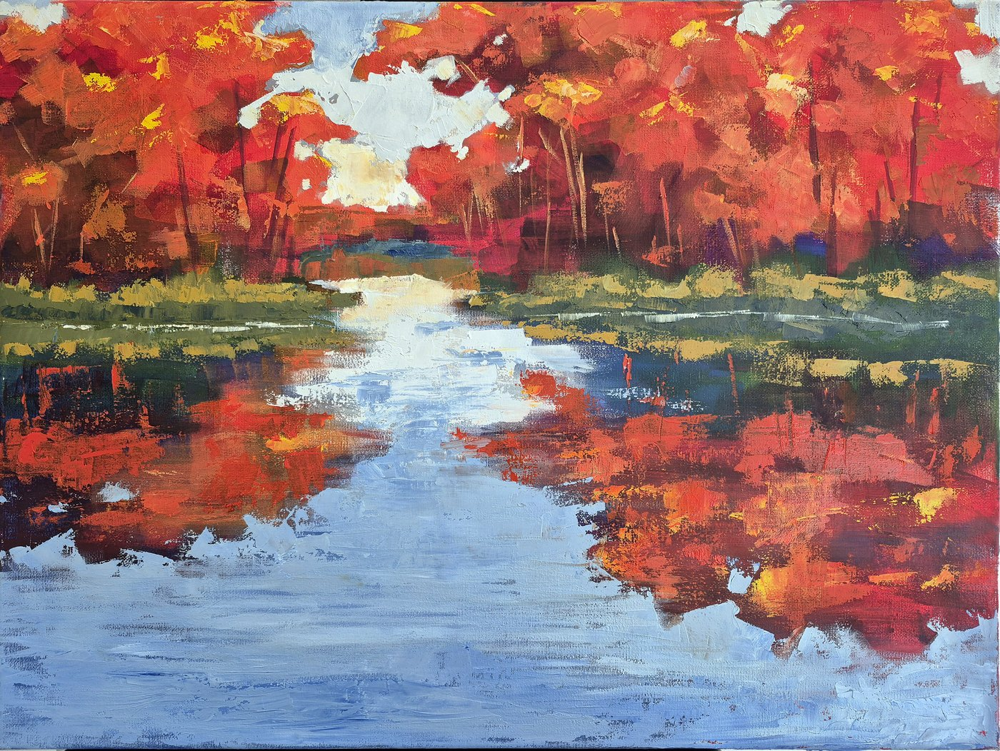
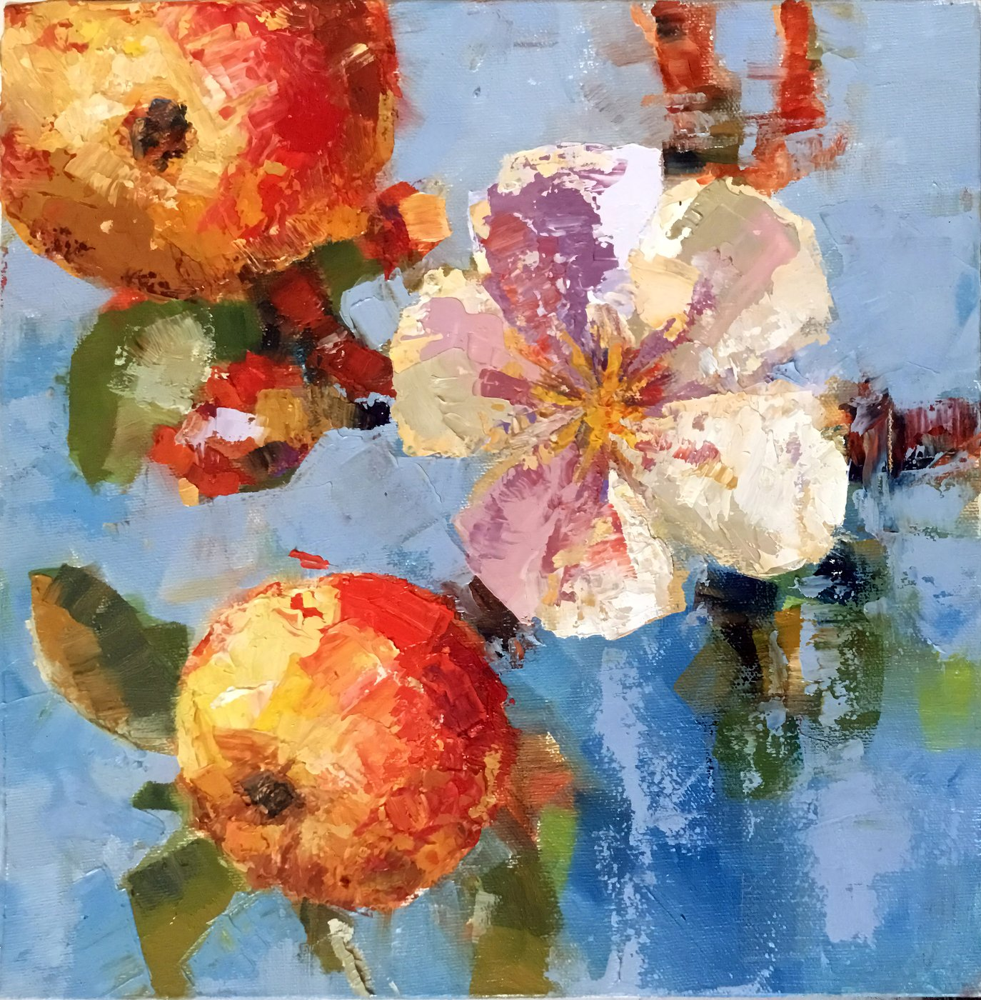
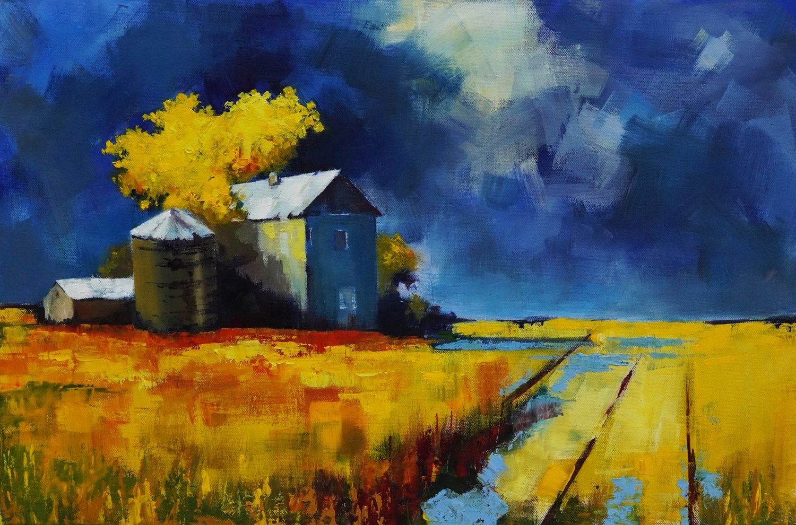
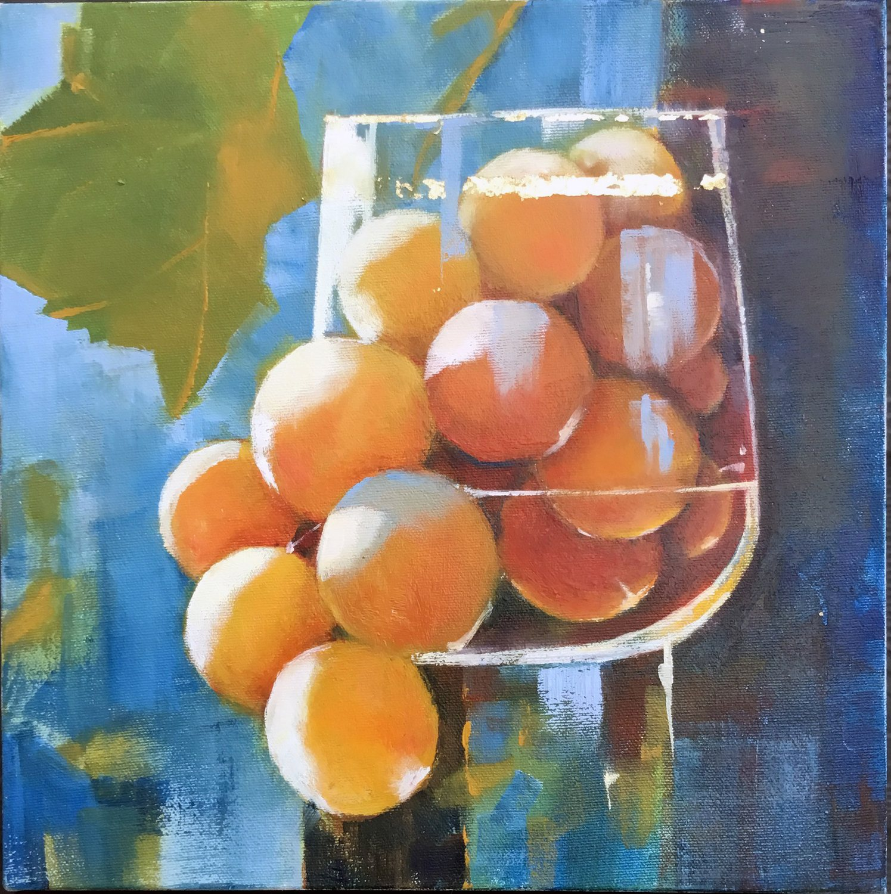
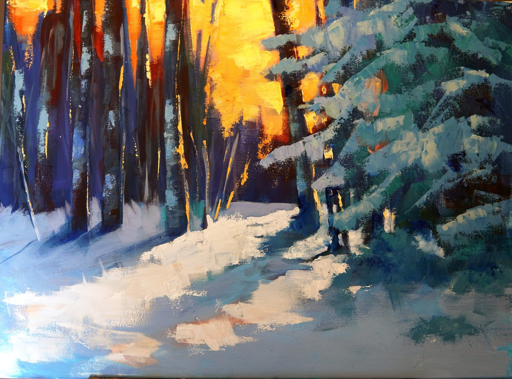
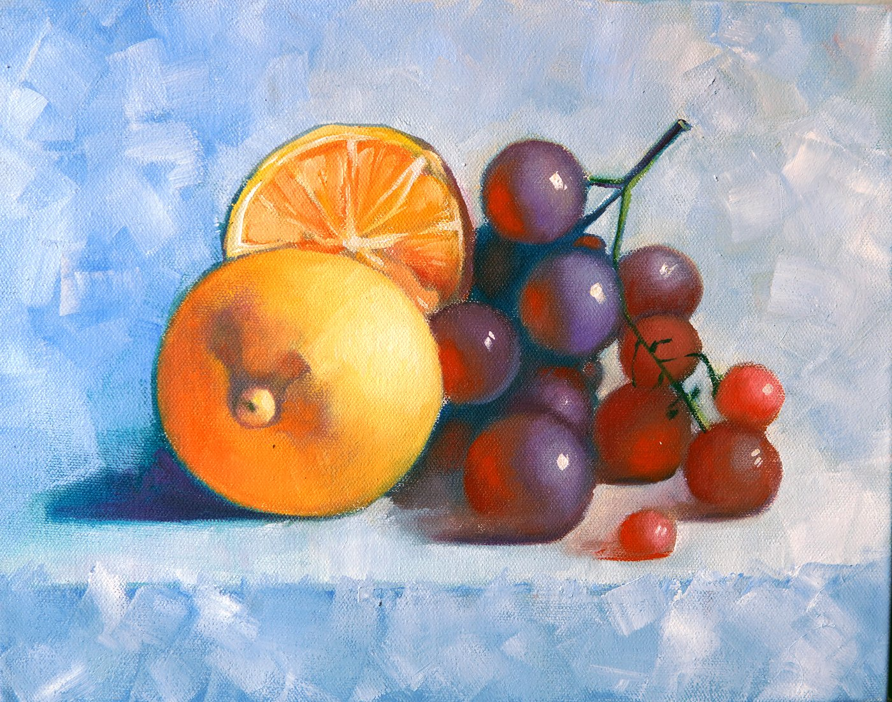
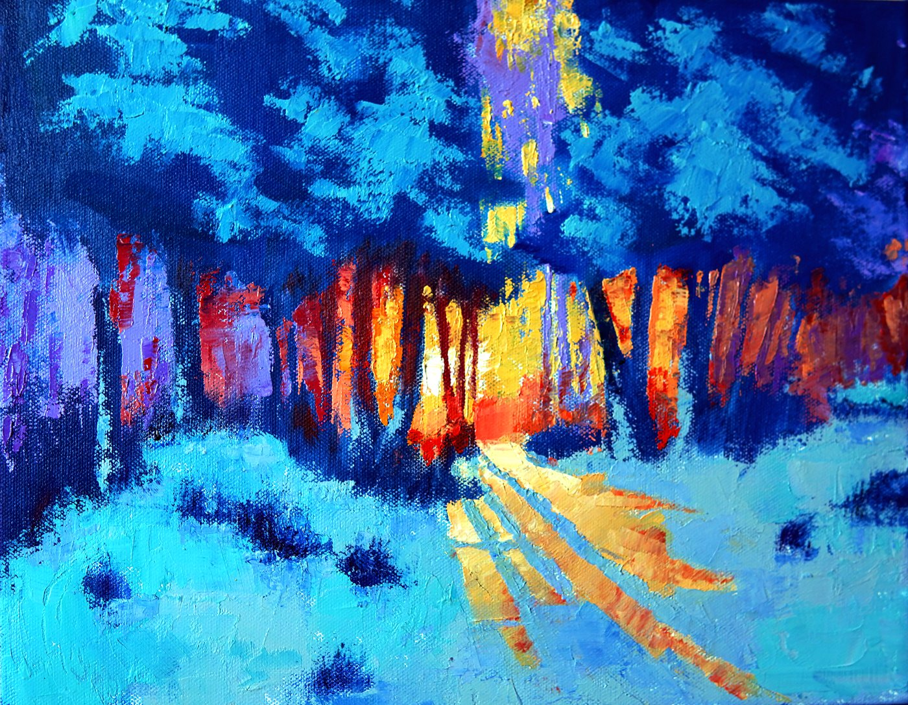
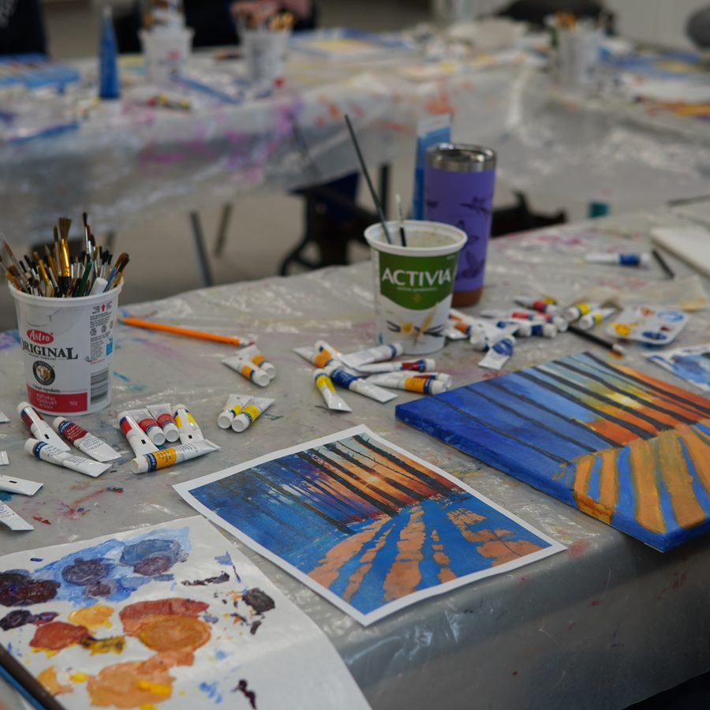
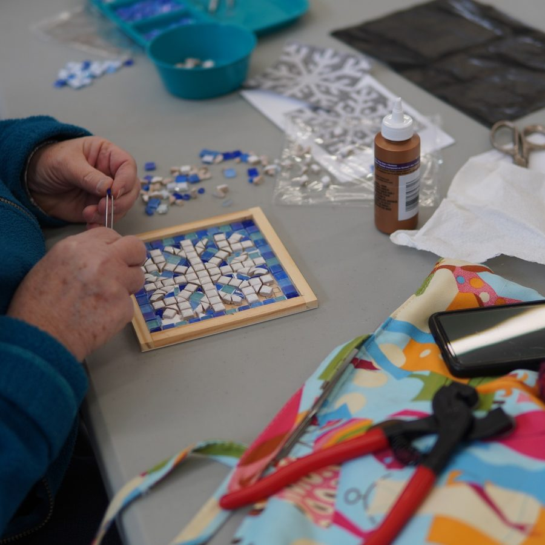
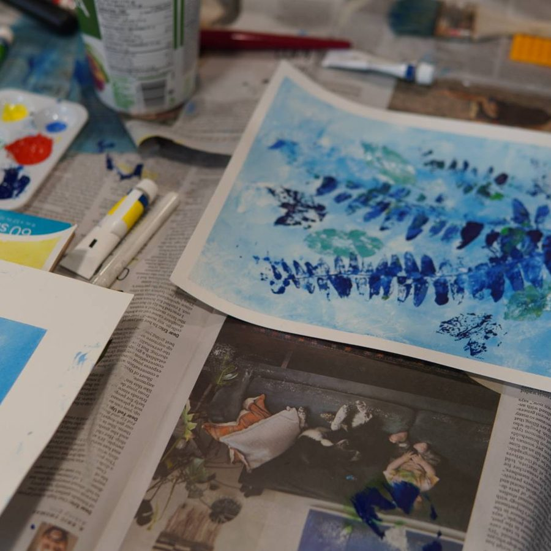

VLAD BORZYK
Oil Painter & Art Teacher · Grand Bend, Ontario
Born and trained in Odesa, Ukraine. Graduated from K. D. Ushinsky University, Faculty of Art and Graphics — diploma project a Byzantine mosaic icon, Mother of God of Tenderness (Eleusa), executed in smalti, stained glass, and fired ceramic tesserae. During and after my studies I worked alongside and studied with painters of the Odesa school, and taught for two years at the Kostandi Art School for Children, Odesa.
Fifteen years of professional mosaic work followed — across Ukraine, Moldova, and Romania — church apses, icons, monumental installations. Two pieces are fully my own from sketch to finished work: the diploma Eleusa and a mosaic portrait of the Odesa painter Kiriak Kostandi. The rest was workshop execution of other artists' designs — the slow, patient craft of laying tesserae one by one.
Today on the shores of Lake Huron, the work is painterly — warm naturalistic still lifes and Ontario landscapes. Both practices, brush and smalti, continue side by side.







Available works at Sunset Arts Gallery, River Road, Grand Bend.
Vlad teaches workshops in acrylic painting, mosaic, nature printing, and mixed-media techniques — hosted at South Huron Arts Centre, Exeter, Ontario. For adult beginners and intermediate makers; every session sends you home with a finished piece.



Current schedule & registration → South Huron Arts Centre.
For commission inquiries — pet portraits and custom work — please send a direct message on Instagram or write by email.